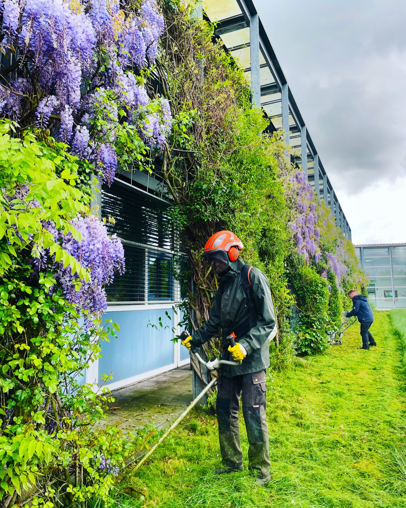

Seit 2003 persönlich geführt von Gartenbaumeister Maik Rohdich.
Außenanlagen fachgerecht pflegen, entwickeln und erhalten.
Wir pflegen, erneuern und prüfen Außenanlagen von Unternehmen, Hausverwaltungen und weiteren gewerblichen Auftraggebern – als Einzelmaßnahme oder im festen Turnus. Gartenbaumeister Maik Rohdich begleitet Ihr Vorhaben persönlich und stimmt Ausführung, Termine und erforderliche Maßnahmen auf Ihr Objekt und den laufenden Betrieb ab.

Unsere Qualifikationen
- Gartenbaumeister Meister im Garten- und Landschaftsbau
- Sachverständiger Gutachter für Garten- und Landschaftsbau (2.4.1)
- Baumkontrolleur LWK-zertifiziert
- Sachkundiger Pflanzenschutz · Wildkrautbekämpfung
- Ausbildungsbetrieb Wir bilden im GaLaBau aus
Was braucht Ihr Objekt jetzt?
Wählen Sie den Anlass – wir klären den passenden nächsten Schritt.
- Pflege & InstandhaltungEinzelmaßnahmen oder planbare Pflegeintervalle für Grün- und Außenflächen – abgestimmt auf Nutzung, Jahreszeit und gewünschten Pflegezustand.
- Umgestaltung & AußenanlagenAußenflächen erneuern, vorbereiten und funktional weiterentwickeln – von Erd- und Bodenarbeiten über Bepflanzung und befestigte Flächen bis zu Bewässerung und Beleuchtung.
- Dach-, Fassaden- & StellplatzbegrünungDächer, Fassaden, Stellplätze und funktionale Freiflächen standortgerecht begrünen.
- Baumkontrolle & BaumarbeitenBaumbestand fachlich kontrollieren, Handlungsbedarf einordnen und erforderliche Maßnahmen umsetzen.
- Akuter SturmschadenGefahrenstellen fachlich einschätzen, erforderliche Maßnahmen koordinieren und Zufahrten oder Stellplätze wieder nutzbar machen. 0171 173 8943
- Fachliche BegutachtungLeistungen, Pflanzen, Angebote oder Abrechnungen einordnen.
Klare Verantwortung. Planbare Ausführung.


-
Persönlich verantwortlich
Ein Ansprechpartner, der Ihr Objekt kennt.
Maik Rohdich begleitet Ihr Vorhaben von der ersten Einschätzung bis zur Ausführung. Absprachen, Besonderheiten und nächste Schritte bleiben bei einem verantwortlichen Ansprechpartner.
-
Eigene Kapazitäten
Eigenes Team, eigener Fuhrpark.
Ein eingespieltes Team und eigene Maschinen halten die Abstimmungswege kurz. Pflege-, Erd- und Umgestaltungsarbeiten lassen sich dadurch koordiniert umsetzen.
-
Abgestimmte Ausführung
Auf Ihren Betrieb abgestimmt.
Arbeitszeiten, Zufahrten und Bauabschnitte stimmen wir mit Ihnen ab. Wir sichern Arbeitsbereiche und hinterlassen sie sauber, damit Ihr Betrieb möglichst ungestört weiterläuft.
-
Musterflächen in Herne
Entscheidungen vor Ort absichern.
Auf 1.500 m² Musterflächen sehen und vergleichen Sie Pflanzen, Materialien und Gestaltungsmöglichkeiten vor der Entscheidung – nach Terminvereinbarung.
So beginnt eine langfristig verlässliche Zusammenarbeit
Durch unsere langjährige Erfahrung wissen wir, welche Informationen zu Beginn wirklich erforderlich sind und wie sich Einsätze verlässlich koordinieren lassen. Von Ihrer ersten Anfrage bis zur Ausführung führen wir Sie durch einen klar strukturierten Ablauf mit kurzen Abstimmungen, eindeutigen Zuständigkeiten und transparenten nächsten Schritten.
-
01
Objektanfrage senden
Standort, gewünschte Leistung und eine kurze Beschreibung übermitteln. Fotos, Pläne oder Angaben zum Turnus helfen bei der ersten Einordnung.
-
02
Bedarf telefonisch einordnen
Wir klären Leistungsumfang, Erreichbarkeit und Zeitrahmen. Ist eine Begehung sinnvoll, stimmen wir Termin und mögliche Kosten vorher ab.
-
03
Angebot erhalten
Sie erhalten ein nachvollziehbares Angebot für Einsatz, Projekt oder Pflegeturnus – mit Umfang, Terminrahmen und Kosten.
-
04
Ausführung koordinieren
Arbeitszeiten, Zufahrten und Abschnitte stimmen wir auf Ihren Betrieb ab. Unser Team setzt die vereinbarten Maßnahmen sauber um.
Objektanfrage senden
Übermitteln Sie uns die wichtigsten Informationen zu Objekt, Leistung und Zeitrahmen. Sie müssen noch nicht alle Details kennen. Fotos, Pläne oder ein Leistungsverzeichnis helfen uns bei der ersten Einordnung.
Ihre Anfrage ist eingegangen.
Wir prüfen die Angaben und Unterlagen. Anschließend melden wir uns persönlich, um den Bedarf einzuordnen und die nächsten Schritte abzustimmen.
Bitte geben Sie bei Ergänzungen Ihre Firma und den Objektstandort an, damit wir die Informationen sicher zuordnen können.
Häufige Fragen zu Ihrem gewerblichen Vorhaben.
Leistungen, Zusammenarbeit und Rahmenbedingungen – kurz und verständlich beantwortet.
Auftrag & Zusammenarbeit
Welche gewerblichen Auftraggeber betreuen Sie?
Wir richten uns an Unternehmen und Gewerbebetriebe, Haus- und Immobilienverwaltungen, Eigentümer und Wohnungswirtschaft sowie institutionelle Auftraggeber und Planungsverantwortliche.
Sind einzelne und wiederkehrende Arbeiten möglich?
Ja. Maik Rohdich übernimmt klar umrissene Einzelmaßnahmen ebenso wie wiederkehrende Objektpflege. Auch Kombinationen mit Umbau- oder Sonderarbeiten sind möglich. Was sinnvoll ist, wird passend zum Objekt abgestimmt.
Was kostet eine Objektbegehung?
Ob für die Begehung Kosten entstehen, klären wir vor dem Termin anhand von Standort, Entfernung und Aufgabenstellung. Sie erhalten diese Information, bevor Sie einen Termin bestätigen.
Beteiligen Sie sich an Ausschreibungen?
Ja, wenn Leistungsumfang, Ort, Fristen und Kapazität zusammenpassen. Senden Sie Ihr Leistungsverzeichnis über das Anfrageformular oder an maik@rohdich.de. Danach erhalten Sie eine klare Rückmeldung.
Fachliche Leistungen & Rahmen
Welche Leistungen können fachlich begutachtet werden?
Maik Rohdich kann ausgeführte GaLaBau-Arbeiten und geliefertes Pflanzenmaterial fachlich einordnen sowie Angebote und Abrechnungen auf Plausibilität prüfen. Fragestellung, Unterlagen, Ortstermin und Form der Dokumentation werden vor der Beauftragung abgestimmt.
Was kann bei Bäumen an einer Grundstücksgrenze beurteilt werden?
Maik nimmt Baumart, Zustand, Standort, Abstand, Überhang und mögliche Schutzvorgaben fachlich auf. Je nach Auftrag erhalten Sie eine schriftliche Bewertung und eine Empfehlung für den nächsten sinnvollen Schritt. Eine rechtliche Entscheidung oder Rechtsberatung ersetzt diese fachliche Einordnung nicht.
Übernehmen Sie Dach-, Fassaden- oder Stellplatzbegrünung?
Ja. Maik Rohdich übernimmt entsprechende Begrünungsarbeiten nach abgestimmter Planung. Ob am konkreten Standort Vorgaben gelten und welche Nachweise erforderlich sind, wird mit der zuständigen Planung oder Behörde geklärt.
In welchem Gebiet arbeiten Sie?
Das Kerngebiet umfasst Herne, Bochum, Castrop-Rauxel, Recklinghausen und Gelsenkirchen. Weitere Standorte sind je nach Art, Umfang und Turnus des Auftrags möglich.